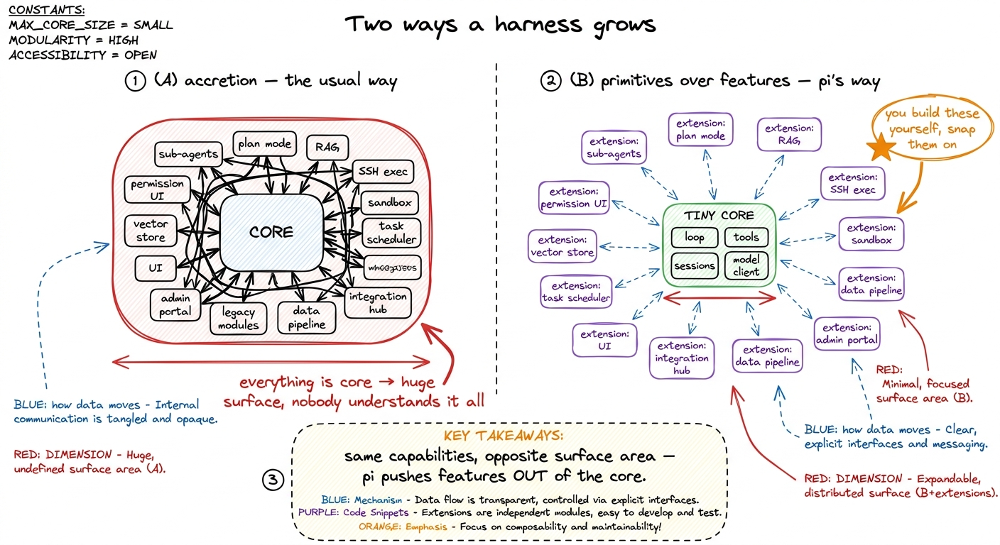
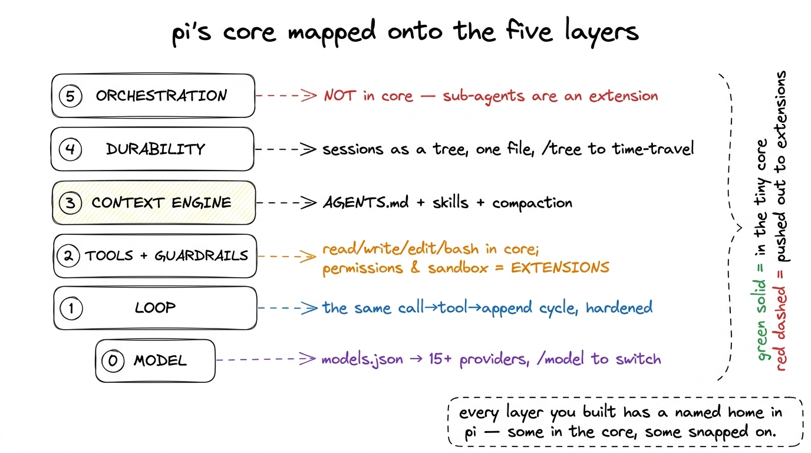
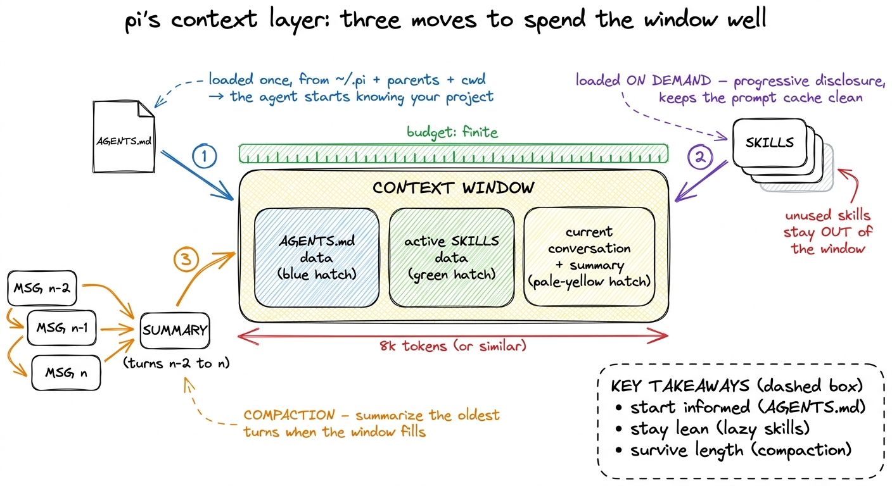
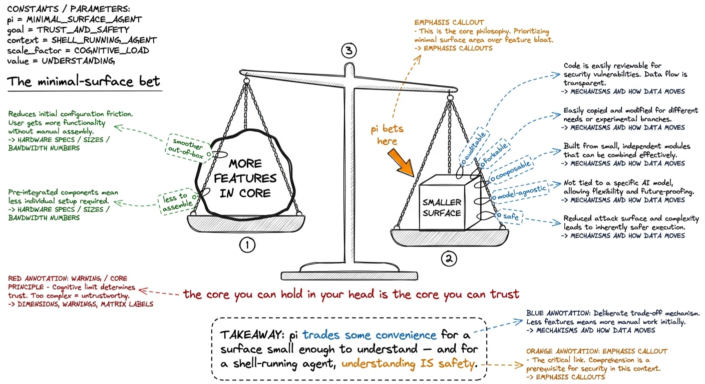

pi internals: the minimal-surface philosophy pi
There is a quiet, almost heretical claim built into the design of pi, and once you see it you cannot unsee it: a real harness does not have to be big. Not big in code, not big in system prompt, not big in feature list. pi is a production coding agent that people use for real work — sub-agents, plan mode, sandboxing, memory, the lot — and yet the thing you download is small enough that you could read most of its core in an afternoon. That is not an accident or a limitation. It is the entire thesis of the project, and it happens to be the best possible proof of everything this book has been arguing: the harness is five understandable layers, not a mountain.
We have spent the whole book building those five layers by hand. In this chapter we look at a harness that made the same choices we did, deliberately and in public, and we map its design onto the layers you already know. Think of pi as your solution key — a chance to check your work against a real system that chose smallness on purpose.
The one principle: primitives over features
Most agents grow by accretion. Someone wants sub-agents, so sub-agents get baked into the core. Someone wants a plan mode, a permission UI, a RAG memory, an SSH executor — each one lands in the base product, each one adds surface, and a year later the "agent" is a sprawling thing nobody fully understands. pi inverts this. Its governing rule is primitives over features: the core ships a small number of sharp, composable primitives, and features that other agents bake in, you build yourself as extensions.

figure rendering · Two ways to reach the same feature set: bake everything into the core,The payoff of this choice is not aesthetic. A small core is a core you can audit, fork, and trust. When the surface is tiny, there are few places for a security bug to hide, few behaviors that surprise you, and a short path from "I wonder how it does X" to reading the actual code that does X. pi ships with powerful defaults but deliberately skips things like sub-agents and plan mode from the core1 This is the mirror image of Claude Code, which bakes more into the product for a smoother out-of-box experience. Neither is wrong — they are different points on the same trade-off curve between batteries-included and minimal-surface. Studying both is the fastest way to feel where the curve bends. See Claude Code's architecture. — and then makes it trivial to add them back if you want them. Absence by default, presence by choice.
What lives in the tiny core
So what does pi keep? Almost exactly the five layers, in their thinnest honest form.
At the bottom sits a model client and a models.json. pi speaks to 15+ providers and hundreds of models, and the way it stays model-agnostic is the same trick we built in the model client: a single configuration surface — models.json plus a provider abstraction — that turns "which brain am I renting" into a data question rather than a code question. You can switch models mid-session with /model, or cycle through your favorites with a keystroke, precisely because the client is a narrow, swappable seam and nothing above it knows or cares which provider answered.
// models.json — model-agnosticism as data, not code
{
"providers": {
"anthropic": { "type": "anthropic", "apiKey": "$ANTHROPIC_API_KEY" },
"openai": { "type": "openai", "apiKey": "$OPENAI_API_KEY" },
"local": { "type": "openai", "baseUrl": "http://localhost:11434/v1" }
},
"models": {
"fast": { "provider": "anthropic", "model": "claude-haiku-4-6" },
"smart": { "provider": "anthropic", "model": "claude-opus-4-8" }
}
}Above the client sits the loop — the same call-model, run-tool, append-result, repeat cycle we derived in your first bare harness. pi does not have a cleverer loop than yours; it has your loop, hardened. The core also carries a small set of built-in tools (read, write, edit, shell, and friends), and a session store. And crucially, it carries a minimal system prompt — a short system-prompt.ts that projects augment or replace with their own SYSTEM.md, rather than a thousand-line wall of instructions the model has to wade through every turn.

figure rendering · pi's design mapped onto the five layers you built. The lower layers liExtensions: the seam that keeps the core small
The single mechanism that makes minimal-surface possible is the extension. In pi, an extension is a TypeScript module with access to tools, commands, keyboard shortcuts, events, and the full terminal UI. It is not a plugin in the shallow "register a callback" sense — it is a first-class citizen with the same reach the core has. That is what lets pi move features out of the core without losing them: sub-agents, plan mode, permission gates, path protection, SSH execution, sandboxing all exist as extensions, shipped as examples rather than as core weight.
The important structural idea is that an extension can hook the loop at exactly the points that matter. It can inject messages before each turn, filter the message history, add tools, add commands, and respond to events. Look at how few hooks that is, and how much power they carry:
// a permission-gate extension — Layer 2, added from the outside
import type { ExtensionAPI } from "@earendil-works/pi-coding-agent";
export default function (pi: ExtensionAPI) {
// intercept a tool call before the harness runs it
pi.on("tool_call", async (event, ctx) => {
if (event.toolName === "bash" && isDangerous(event.input.command)) {
const ok = await ctx.ui.confirm(`Run: ${event.input.command}?`);
if (!ok) return { block: true, reason: "denied by user" };
}
});
}That tool_call hook is the whole of a permission gate, living outside the core. A sandbox is the same shape — intercept the tool, run it somewhere confined. A sub-agent is an extension that adds a spawn tool whose implementation runs a second pi loop with its own message array and hands the summary back2 This is exactly the sub-agents and handoffs pattern from Layer 5 — a child loop with an isolated context, reporting a compressed result to the parent. That pi implements it as an extension rather than a core feature is the strongest possible statement that orchestration is optional machinery, not part of the irreducible agent. — Layer 5, snapped on. The lesson for your own harness is precise: design the loop with a few well-chosen hooks, and every heavy feature becomes an add-on instead of a rewrite.
How pi handles the context layer
Context engineering is the one area pi refuses to treat as optional, because it is the layer that decides whether long sessions survive at all. Three pieces carry it.
First, AGENTS.md — pi's equivalent of CLAUDE.md. Project instructions are loaded from ~/.pi/agent/, from parent directories, and from the current directory, and merged, so the agent starts every run already knowing your conventions. This is the memory layer from Layer 3, expressed as a plain file you can read and edit.
Second, skills — capability packages loaded on demand. The subtle win here is what pi calls progressive disclosure: a skill's full instructions only enter context when the model actually reaches for that capability, so the base prompt stays lean and — this is the part people miss — the prompt cache stays clean. Dumping every skill into the system prompt upfront would both waste the context budget and invalidate caching on every session. Loading them lazily avoids both.
Third, compaction — auto-summarization of older messages as the conversation approaches the context limit, and (of course) fully customizable via an extension. This is our compaction and summarization chapter, present in the core because a harness that cannot compact simply dies on turn two hundred.

figure rendering · pi's context layer in three moves: load project memory once from AGENTDurability as a tree, not a log
Most harnesses model a session as a linear log — one growing list of messages. pi models it as a tree. Every branch of the conversation persists in a single file, and the /tree command lets you navigate to any previous point and continue from there. Time-travel, not just undo.
This is a genuinely better answer to Layer 4's durable execution and checkpointing question than the append-only log we built, and it is worth understanding why. A linear log answers "what happened." A tree answers "what could have happened from here" — it makes every checkpoint a fork point. Took a wrong turn twelve messages ago? Jump back to that node and try a different tack, without losing the branch you abandoned. Because it is all one file, the whole tree is trivially serializable, shareable (pi exports to HTML or a GitHub gist), and replayable. The durability layer and the debugging experience turn out to be the same data structure.
What the minimal surface actually buys you
Step back and total it up. By pushing features out to extensions and keeping a tiny core, pi buys four things at once, and each maps to something you now understand deeply:
- Auditability. A small core is a readable core. When something surprises you, the path to the code that did it is short — which for an agent that runs shell commands on your machine is not a nicety, it is a safety property.
- Model-agnosticism as a seam.
models.jsonmakes the brain a swappable data field, so pi rides every new model release for free instead of being welded to one provider. - Composability. Because features are extensions over a few loop hooks, you assemble the exact agent you need — permission-gated but no sub-agents, or sandboxed SSH but no plan mode — instead of accepting one vendor's bundle.
- A honest ceiling on complexity. Nothing gets to sneak into the core. Every heavy feature has to justify itself as an extension, which keeps the irreducible agent irreducible.

figure rendering · The minimal-surface bet: trade a little out-of-box convenience for a sThe proof, and the mirror
Here is why pi belongs at the end of this book rather than the start. When you first read what is a harness, the claim that a coding agent is "just" five layers around a borrowed model might have felt like a teaching simplification — the kind of clean story that falls apart in a real system. pi is the evidence that it does not fall apart. A shipping, capable, multi-provider coding agent is genuinely a tiny core of loop-plus-tools-plus-sessions, a model seam expressed as models.json, a context layer of AGENTS.md-plus-skills-plus-compaction, sessions kept as a durable tree, and everything heavier — permissions, sandbox, sub-agents, plan mode — living outside as extensions. That is the five-layer map you built, drawn by someone else, arriving at the same shape.
So use pi the way you would use an answer key. Read its core against your loop. Read its models.json against your model client. Read one of its permission-gate or sub-agent extensions against the corresponding layer you wrote, and notice where they made a sharper choice than you did — the session tree is a good place to start.3 The very best way to internalize this chapter is to port one of your layers into a pi extension, or one of pi's extensions into your harness. The moment a feature moves cleanly across the seam, you have proven to yourself that your loop's hooks are in the right places. The goal of this whole book was never for you to memorize one harness. It was for you to see the invariant underneath all of them — and pi, by keeping its surface small enough to see through, shows you the invariant more clearly than any large system ever could.
Next, we take everything the five layers gave us and assemble the capstone: your own production harness, built the pi way — small core, honest seams, features you can trust because you put them there yourself.